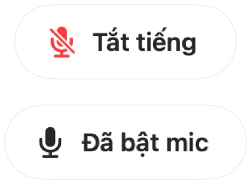

Nhấn để nói và phím tắt tắt tiếng toàn hệ thống cho Discord trên Mac
Tính năng nhấn để nói của Discord cần thêm quyền trên Mac và không hoạt động với Discord trên trình duyệt. Nếu bạn cũng tham gia các cuộc họp trên Meet hoặc Zoom, bạn sẽ phải nhớ một phím tắt tắt tiếng riêng cho từng ứng dụng.
Muffle mang đến cho bạn một phím duy nhất cho tất cả ứng dụng. Nhấn để tắt tiếng, giữ để nói chuyện hoặc nhấn vào AirPods của bạn.
Thiết lập tính năng nhấn để nói cho Discord
- 1
Cài đặt Muffle và cho phép truy cập micrô.
- 2
Tham gia một kênh thoại Discord.
- 3
Nhấn Control-Option-M để tắt hoặc bật tiếng. Giữ phím khi đang tắt tiếng để nói chuyện.
- 4
Chọn phím bạn muốn trong Cài đặt Muffle, ví dụ như một phím F.

- Phím tắt của Muffle không cần cấp quyền Trợ năng.
- Khóa mức micrô của bạn để tính năng tự động tăng âm lượng của Discord không liên tục thay đổi mức này.
Câu hỏi thường gặp
Tính năng này có giống nhấn để nói của Discord không?
Tính năng hoạt động tương tự, nhưng áp dụng cho mọi ứng dụng cùng lúc. Muffle sẽ trực tiếp tắt tiếng micrô, vì vậy Discord chỉ nhận được sự im lặng cho đến khi bạn giữ phím.
Tôi có thể tắt tiếng Discord bằng AirPods không?
Có. Trong cuộc gọi thoại, nhấn vào thân tai nghe AirPods để chuyển đổi tắt tiếng.